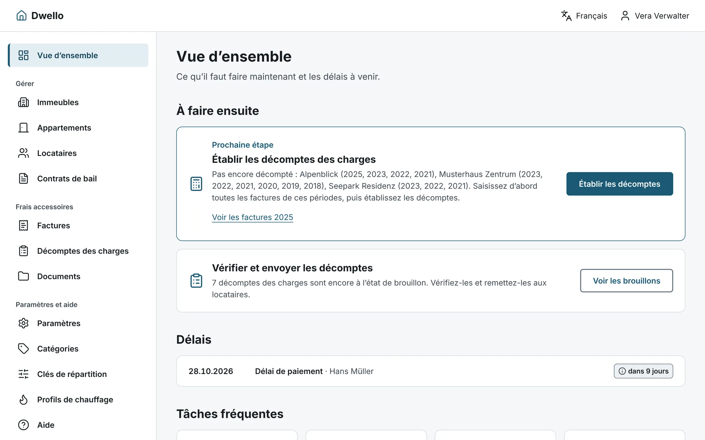
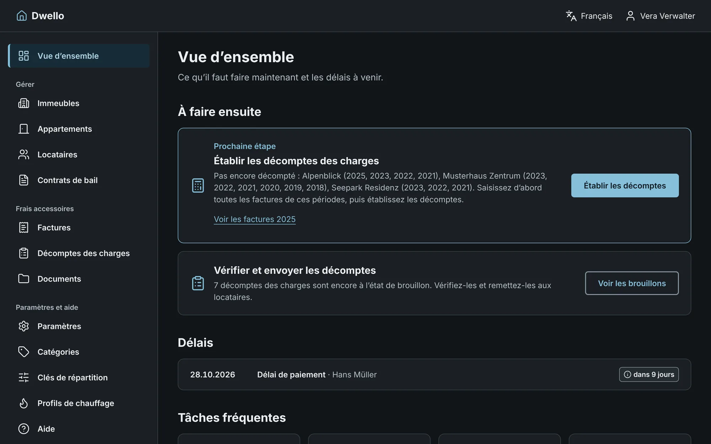
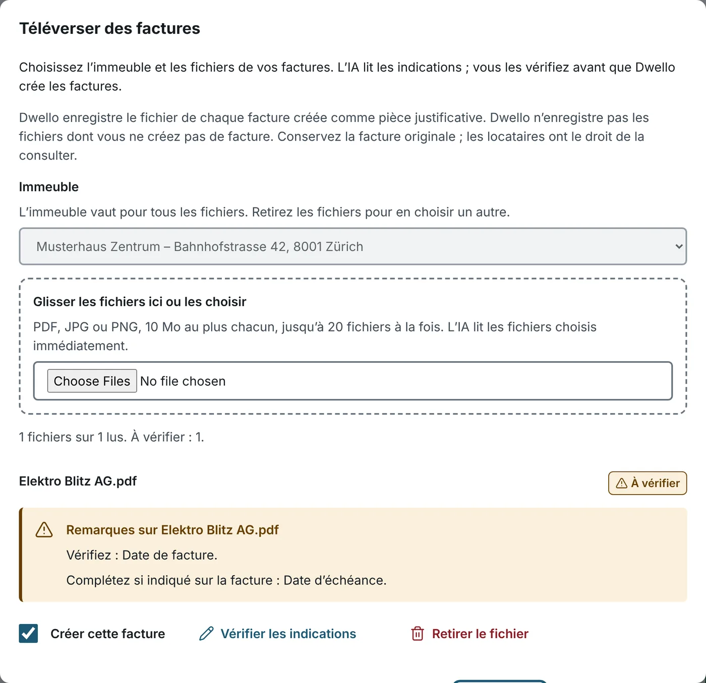
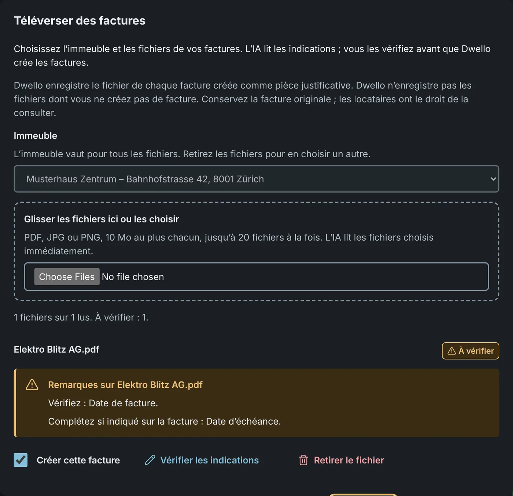
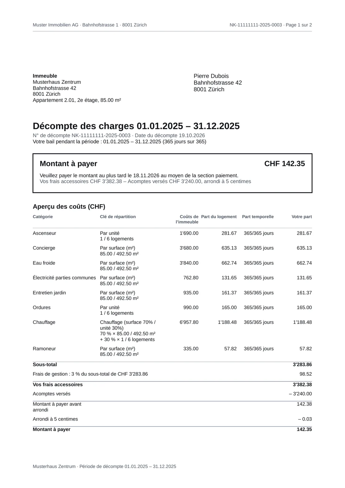
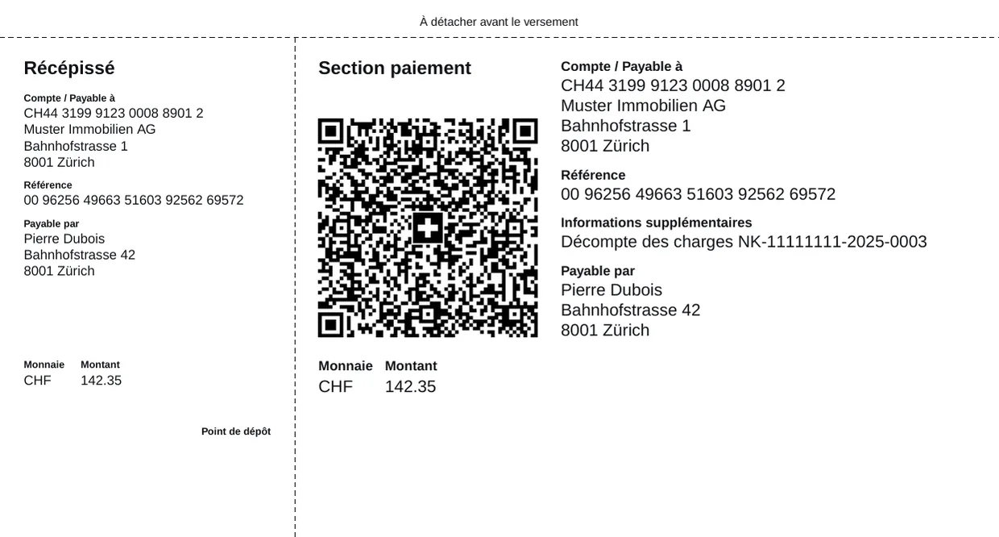
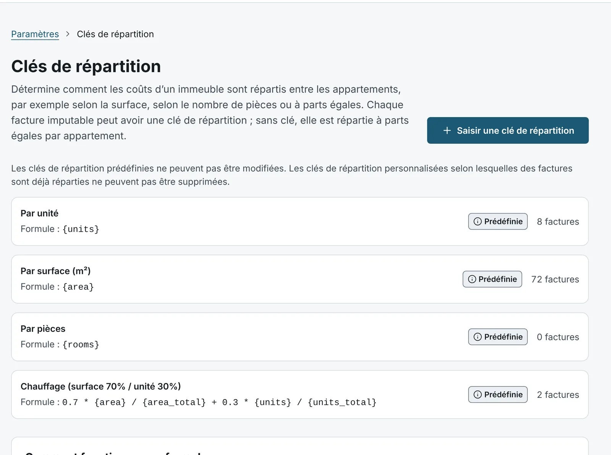
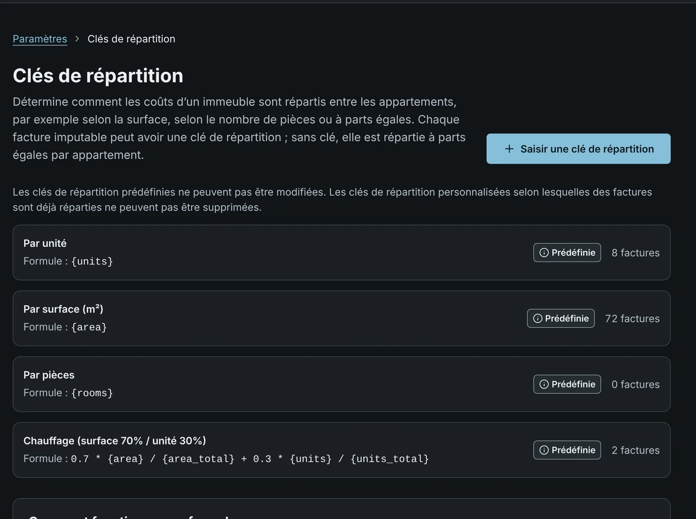

Quatre langues
Allemand, français, italien et anglais. Décomptes et rappels dans la langue des locataires.
Dwello établit le décompte des charges pour les bailleresses et bailleurs privés. Glisser les factures, vérifier le décompte, l’envoyer avec la QR-facture. Le logiciel tourne chez vous, et l’IA lit vos pièces justificatives sur votre propre ordinateur ou, si vous le configurez ainsi, chez un fournisseur de votre choix.
Gratuit et sans abonnement. L’installation demande quelqu’un qui s’y connaît en informatique. Ensuite, vous travaillez avec Dwello sans connaissances techniques ; cette personne s’occupe des mises à jour et des sauvegardes régulières.


Dwello est fait pour les personnes qui possèdent un immeuble et ne veulent pas tenir une gérance. La vue d’ensemble vous dit quoi faire ensuite, et chaque champ explique son terme.
Chercher l’adresse, créer les appartements avec surface et pièces, saisir les locataires et les contrats de bail avec les frais accessoires convenus et l’acompte.
Glissez les PDF. L’IA lit le montant, la date et la catégorie et vous dit quoi vérifier.
Pour tout l’immeuble en une fois, au jour près lors d’un changement de locataire et avec profil de chauffage. Dwello déduit les acomptes convenus ; les paiements manquants se règlent en dehors du décompte.
Par e-mail ou par lettre, avec QR-facture suisse et dans la langue de vos locataires.
Toutes les images de cette page viennent de la vraie application avec les données de démonstration : trois immeubles à Zurich, Lucerne et Interlaken.
Glissez jusqu’à 20 factures à la fois dans Dwello. L’IA lit l’émetteur, le montant, la date et la période de prestation et attribue la catégorie. Ce dont elle n’est pas sûre, Dwello l’indique. La facture n’est créée que lorsque vous confirmez.


Dwello calcule selon les règles du droit du bail et montre pour chaque catégorie les coûts de l’immeuble, la part du logement et les jours de location. Vos locataires voient le même détail dans le PDF : Hans Müller, appartement 1.01 du Musterhaus Zentrum, doit par exemple payer CHF 215.80 pour 2025. Vérifiez chaque décompte avant de l’envoyer : Dwello ne remplace pas un conseil juridique.
Chaque décompte est un PDF avec section paiement selon la norme suisse, dans la langue de la locataire ou du locataire. Si un paiement manque, Dwello rédige le rappel de paiement et les rappels, chacun avec sa propre section paiement QR.


Coûts selon la surface, les pièces, les unités ou une formule personnalisée, par exemple 70 % selon la surface et 30 % par appartement. Les frais de chauffage suivent un profil de chauffage : en janvier, un jour de location compte plus qu’en été. Un profil est fourni pour le Plateau, la montagne et le Tessin, plus un pour le chauffage avec eau chaude.


Allemand, français, italien et anglais. Décomptes et rappels dans la langue des locataires.
Suit le réglage de votre appareil. Tous les contrastes sont vérifiés, aussi dans le sombre.
Ce qu’il faut faire maintenant, les délais à venir et les appartements vacants.
À durée déterminée ou indéterminée. À la fin, Dwello indique le délai de congé et demande la nouvelle adresse.
Qui souhaite un e-mail reçoit le PDF. Pour tous les autres, Dwello imprime la lettre.
Lettres, décomptes et rappels au même endroit.
Reprendre immeubles et appartements avec surface, étage et pièces du registre fédéral.
L’installation est faite une fois par quelqu’un qui s’y connaît en informatique : un membre de la famille, une connaissance ou votre service informatique. Donnez-lui le guide ; il faut environ une heure. Ensuite, vous travaillez dans le navigateur, sans connaissances techniques. Cette personne fait les mises à jour et les sauvegardes régulières ; le guide les décrit.
# 1. Télécharger Dwello $ git clone https://github.com/rudini/Dwello.git && cd Dwello # 2. Créer les réglages, puis les remplir (guide) $ cp .env.example .env # 3. Démarrer : application, base de données et IA locale $ docker compose -f docker-compose.prod.yml up -d # 4. Charger le modèle d’IA (une fois, env. 6 Go) $ docker exec dwello-ollama ollama pull qwen3-vl:8b-instruct ✓ Dwello tourne sur http://localhost:3000
# Sur le serveur domestique, par SSH $ git clone https://github.com/rudini/Dwello.git && cd Dwello $ cp .env.example .env # Sans matériel puissant : indiquer une IA externe # LLM_BASE_URL=https://votre-fournisseur-ia.example/v1 $ docker compose -f docker-compose.prod.yml up -d # HTTPS avec votre domaine : voir le guide ✓ Dwello tourne sur https://dwello.votre-domaine.ch
# Sur un serveur Linux neuf avec Docker $ git clone https://github.com/rudini/Dwello.git && cd Dwello $ cp .env.example .env $ docker compose -f docker-compose.prod.yml up -d # HTTPS avec Caddy : voir le guide ✓ Dwello tourne sur https://dwello.votre-domaine.ch
Les données des locataires sont des données personnelles. Dwello les traite ainsi : elles restent sur votre serveur, rien ne nous parvient, et vous pouvez renseigner à tout moment. Ne sort que ce qu’une tâche exige : la connexion via Google, la recherche d’adresse dans le registre des bâtiments de la Confédération, vos e-mails aux locataires et, si vous le configurez ainsi, les factures vers une IA externe. Vous restez responsable des données de vos locataires.
Dwello n’est pas fait pour les professionnels, mais pour vous. Des mots clairs plutôt que du jargon, une action principale par page, et avant toute action définitive, Dwello vous dit exactement ce qui va se passer.
0.– CHF par an
Tout le code source est public, sous licence GNU AGPL-3.0-or-later. Vous pouvez le lire, le vérifier, l’adapter et le transmettre. Il n’y a pas d’abonnement premium, pas de limite par appartement et aucune fonction qui deviendra payante plus tard. L’AGPL garantit que toute version modifiée utilisée en ligne par d’autres reste ouverte, elle aussi.
Dwello est développé ouvertement. Ces points sont prévus ; la plupart ont leur ticket sur GitHub, où vous pouvez donner votre avis.
Une commande, une question sur votre e-mail, terminé. Avec sa propre connexion, sans compte Google.
Dwello comme outil pour votre assistant IA, en local et avec votre autorisation.
Toutes les données en CSV et JSON, à tout moment, en un clic.
Recettes, dépenses et frais accessoires au fil des ans, pour la déclaration d’impôt et la fiduciaire.
Chaque installation indique où se trouve son code source, comme l’exige l’AGPL.
Pour l’installation, puis pour les mises à jour et les sauvegardes régulières. Demandez à quelqu’un qui s’y connaît en informatique et donnez-lui le guide. Pour travailler avec Dwello, aucune connaissance préalable n’est nécessaire : chaque terme est expliqué au champ.
Oui. Dwello est open source et gratuit. Vous payez tout au plus votre propre serveur ou l’électricité de votre PC, et l’affranchissement des lettres. Si vous utilisez une IA externe au lieu de l’IA locale, vous la payez directement au fournisseur.
Pour les bailleresses et bailleurs privés avec un à cinq immeubles et jusqu’à 50 appartements. Dwello n’est pas fait pour les grandes gérances avec des équipes.
Rien sans votre confirmation. L’IA propose les indications et Dwello vous dit lesquelles vérifier. La facture n’est créée que lorsque vous confirmez. Vous pouvez aussi saisir chaque facture vous-même.
Non, ni par une avocate, un avocat ni une association. Dwello calcule selon le Code des obligations et l’ordonnance sur le bail (OBLF), et des tests automatiques vérifient les règles qu’il en met en œuvre. Cela ne remplace pas un conseil juridique : en cas de litige, l’association des propriétaires ou l’autorité de conciliation vous aident.
Oui. La démo sur demo.dwello.ch montre trois immeubles à Zurich, Lucerne et Interlaken avec 13 appartements. Elle est réinitialisée chaque nuit.
Regardez la démo et faites installer Dwello. Saisissez ensuite votre immeuble et téléversez les factures dès qu’elles arrivent. Une fois la période de décompte terminée, le décompte est vite fait.